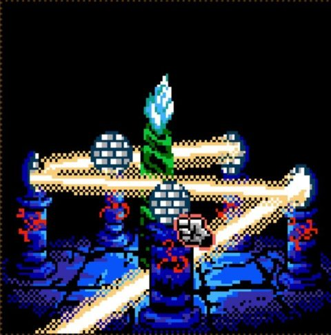
- 47 rooms, full route verified from title screen to ending
- Three save slots
- Strategy guide: 11 pages
The magazine for players who read the manual
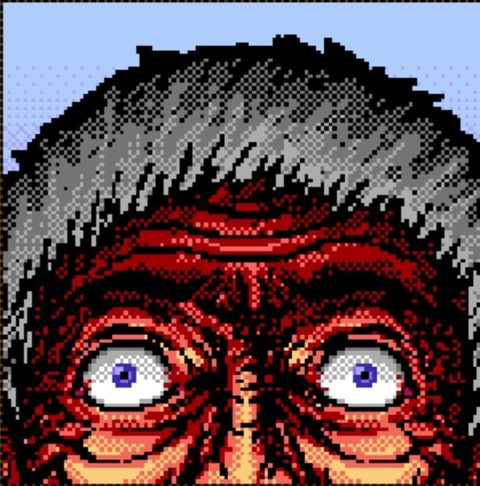
From the Editor's Desk
Remember tearing the shrink-wrap off a new cartridge and finding a thick guide tucked behind it? From Beyond: Prologue is bringing that back. Its point-and-click horror is heading to real cartridges — and every boxed copy comes with a complete, room-by-room strategy guide written for that system.
Pull up a chair, light the lantern, and mind the wolves.
Cover Story
A motorcar, a field bag, and a valley the maps refuse to explain. We go hands-on with the cartridge ports of SuckerFree Games' award-winning horror adventure.
In the winter of 1910, Professor Crawford Tillinghast mounted an expedition into the mountains of Europe, searching for a lost village shrouded in the myths and rumors of a bygone era. The road runs out at a wall of mountain snow — and that's where your adventure begins.
Out of the car, through the briar, past the watchtower and down into an abandoned village with a temple sleeping beneath it, From Beyond: Prologue plays out as one continuous point-and-click horror adventure. Five verbs — Look, Use, Talk, Take, Open — are all you need. Using them wisely is another matter.
First released on Steam in December 2018, the game's look and sound were always inspired by classic cartridge-era adventures. Now it's going all the way: the game is being ported to real cartridges for three classic systems.
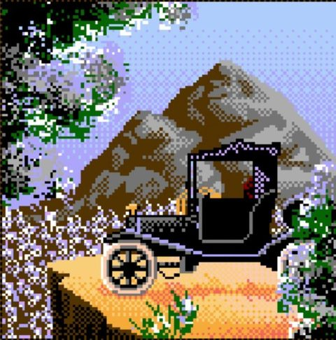
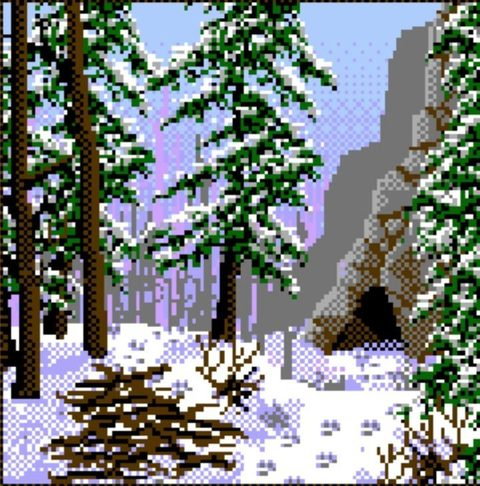
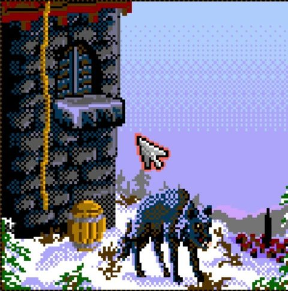
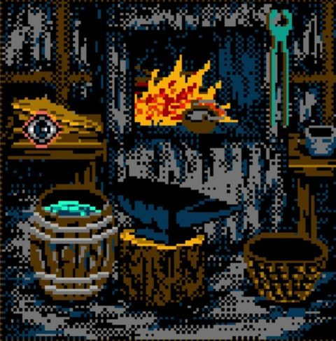
Pixel Expedition · 2–3
Cartridge Watch

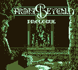
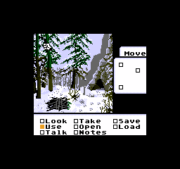
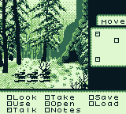
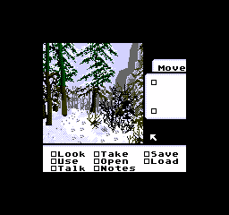
Release dates and pricing for all three cartridges: [TBD — William to confirm]
Pixel Expedition · 4
Inside the Box
Boxed copies include a printed strategy guide made for that system — the kind you'd keep next to the console and read on the bus.
Act I — The Mountain Page 4
The Motorcar. OPEN the car door, then TAKE the field bag from the seat. Inside: matches, compass, sheathed knife, light hatchet, dried meat, pistol, hip flask, rope and lantern.
The Trail. A navigation hub. Markers lead back to the car, to the watchtower and to the briar patch. Head for the briar.
The Briar. USE the light hatchet on the briar to cut a path. USE the rope on the sticks, then TAKE the bundle.
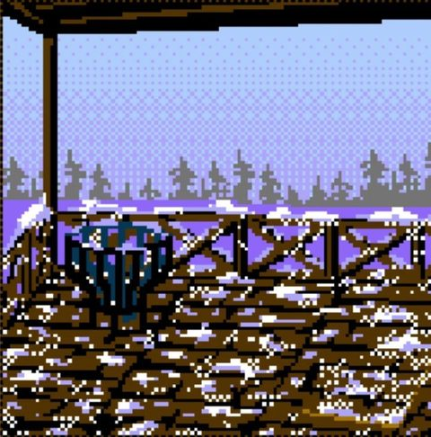
THE GOLDEN RULE — Exhaust every room before moving on. Almost every puzzle is solved with something you picked up two screens ago.
Sample text above is an excerpt from the Genesis guide. Other box contents and box art: [TBD — William to confirm]
Pixel Expedition · 5
Field Tips
Tip #1
A she-wolf guards the cave. Offer her the dried meat from your bag and she'll carry it off to her cubs. Shooting the big wolf at the watchtower works too — but you'll lose the Beast Master achievement.
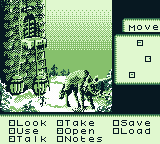
Tip #2
There are three save slots. Use them — the valley kills the careless.
Warning!
Going down the switchback starts Act II, and the mountain path behind you is gone. Finish your business on the mountain first!
Tip #3
The journal keeps every letter, note and diary page you find. When you're stuck, re-read it.
Want the full route? It's in the box.
Pixel Expedition · 6
The Critics' Corner
“This game definitely channels that MacVenture groove!”— Friday Night Arcade
Pixel Expedition · 7
Reader Hotline
Boxed cartridges are coming, with a Kickstarter planned for distribution. Join the notify list and you'll hear the moment it goes live.
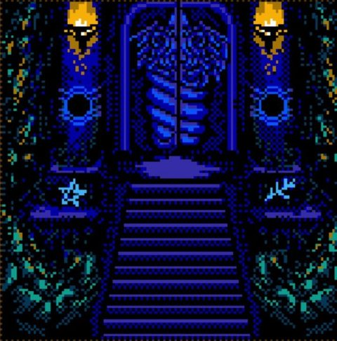
Pixel Expedition · 8